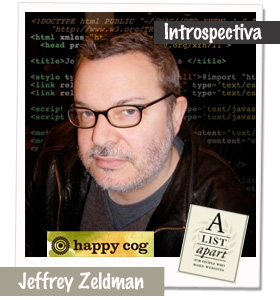

WEB 3.0(2006-2015)
Se refiere a la próxima evolución de Internet, caracterizada por una mayor descentralización, interoperabilidad y capacidades semánticas. A diferencia de las etapas anteriores de la web, la Web 3.0 busca crear un entorno donde los usuarios tengan un mayor control sobre sus datos y experiencias en línea, y donde las aplicaciones puedan interactuar de manera más inteligente entre sí.

2006
Es mencionada por primera vez por Jeffrey Zeldman donde publicó un libro titulado "Designing with Web Standards" (Diseñando con Estándares Web), que se convirtió en un recurso fundamental para los diseñadores y desarrolladores web que buscaban adoptar mejores prácticas en la creación de sitios web. En este libro, Zeldman abogó por la importancia de utilizar estándares web abiertos y semánticos para mejorar la accesibilidad, la interoperabilidad y la usabilidad de los sitios web.
2007
Es lanzado oficialmente HTML5 es la quinta revisión del estándar del lenguaje de marcado HTML (HyperText Markup Language). Fue lanzado por primera vez como un borrador por el Consorcio World Wide Web (W3C).

2009
Bitcoin, la primera criptomoneda descentralizada, fue creada por una persona o grupo de personas bajo el seudónimo de Satoshi Nakamoto en 2008. El 3 de enero de 2009, se realizó la primera transacción de bitcoin entre Satoshi Nakamoto y Hal Finney, marcando el inicio de la existencia funcional de Bitcoin.

2012
El comercio electrónico ha experimentado un crecimiento significativo a lo largo de los años, y para 2012 ya había alcanzado cifras considerables. Sin embargo, la cifra exacta de 624 millones de comercio electrónico en 2012 no es precisa. Las cifras de comercio electrónico suelen medirse en términos de valor monetario en lugar de cantidad absoluta de transacciones.
2013
Fue el lanzamiento de la consola de videojuegos de próxima generación, la PlayStation 4 (PS4), por Sony Computer Entertainment. La PS4 fue anunciada oficialmente en febrero de 2013 y lanzada en noviembre del mismo año en varios países.
2014
Lanzamiento del Apple Watch, el primer reloj inteligente desarrollado por Apple Inc. Anunciado en septiembre de 2014 y lanzado en abril de 2015, el Apple Watch marcó la entrada de Apple en el mercado de los dispositivos ponibles (wearables).